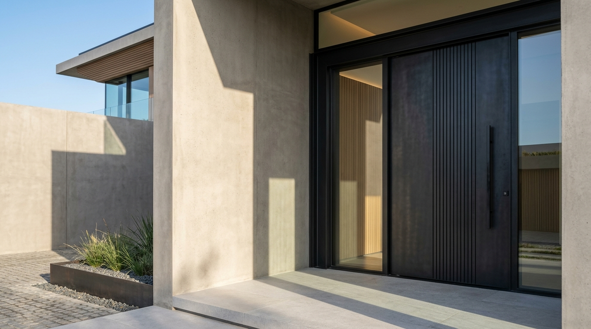
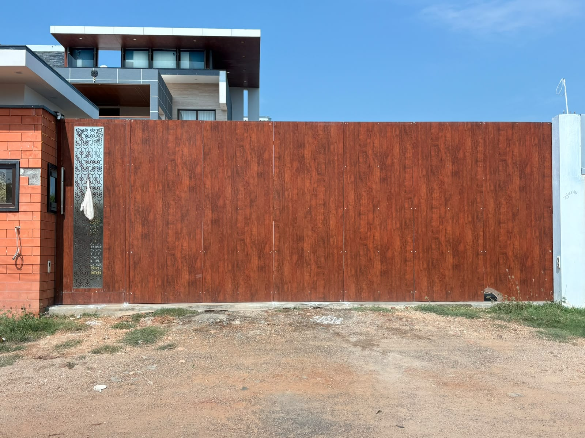
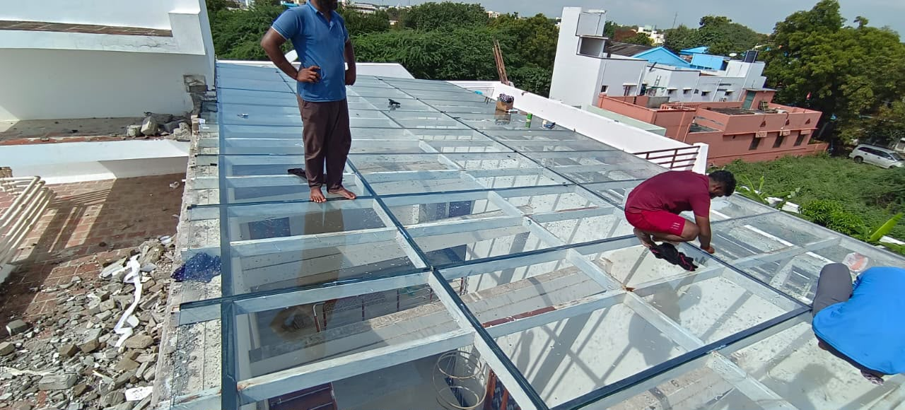
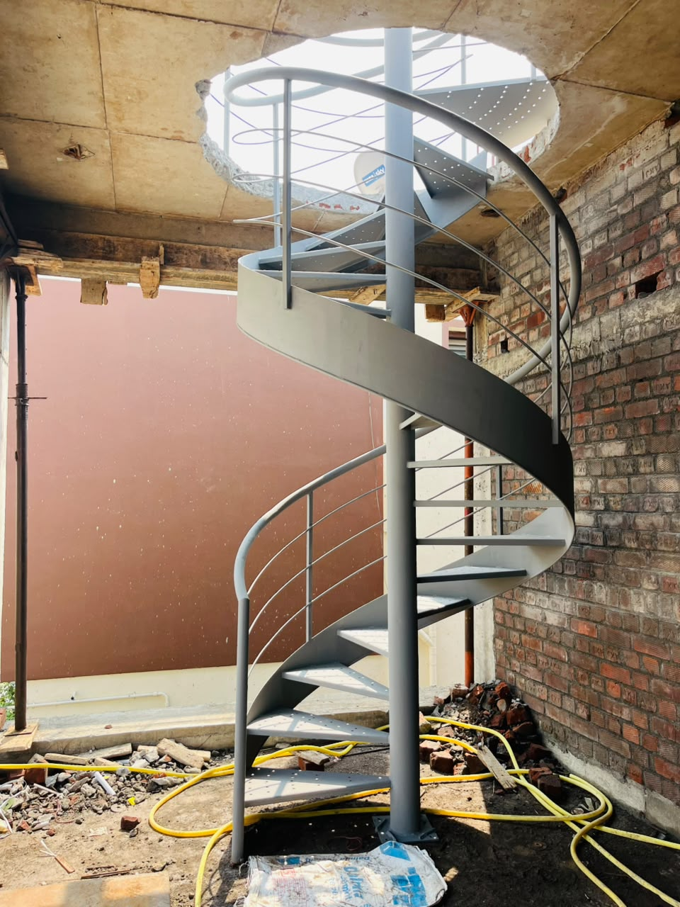
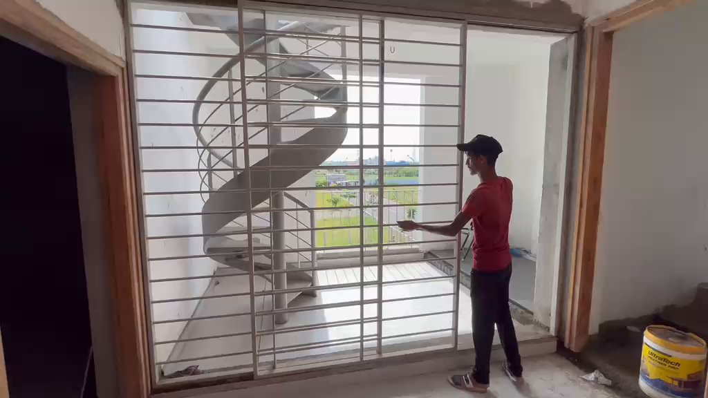
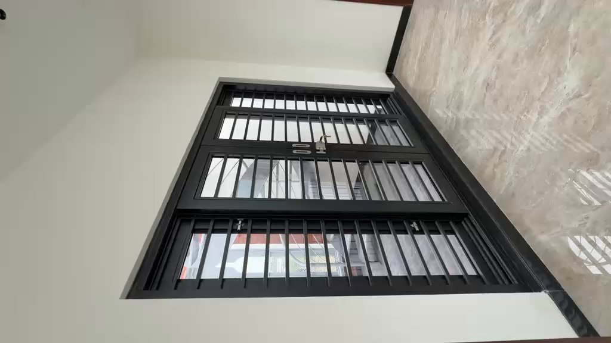
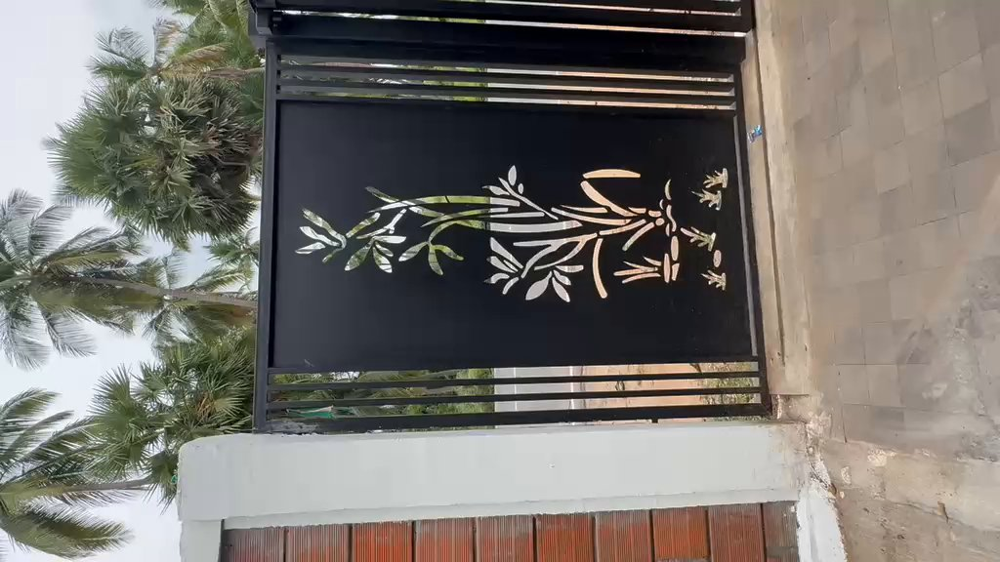

BUILT IN STEEL.
DEFINED BY DESIGN.
From bold entrances to defining details, we make steel part of the architecture. Precision-crafted bespoke doors, automated gate systems, and structural stairs fabricated in Madurai.

Dedicated mastery in metal forming, structural fabrication, and architectural detailing in Madurai & Southern Tamil Nadu.
High-tensile structural beams, rolled stringers, laser-cut screens, and fine ornamental steel profiles shaped into architectural form.
Strict CNC laser bed tolerances, concealed seam alignments, and mechanical bearing clearances for effortless movement.
A MATERIAL. MANY POSSIBILITIES.
Every project begins with a vision. We shape the steel that brings it to life. Hover or select a discipline below to reveal its architectural execution.




FROM RAW MATERIAL TO REFINED DETAIL.
Steel begins as raw structural section. Through engineering, precision cutting, joinery, and meticulous finishing, it becomes an enduring architectural landmark.

VISION & LOAD ANALYSIS
We evaluate the structural foundation, spatial clearance, wind loads, and architectural intent alongside the client and architect.

CAD & JOINT DETAILING
Translating concepts into millimeter-accurate 3D models, defining anchor bolt locations, hidden brackets, and CNC cutting vector paths.

PRECISION FABRICATION
High-power CNC fiber laser cutting, mechanical plate rolling, jig fitting, and certified TIG/MIG welding inside our Madurai facility.

SURFACE & FINISHING
Abrasive blast cleaning, multi-coat zinc phosphate anti-corrosion primer, and electrostatic architectural powder coating baked for extreme durability.
INSTALLATION & ALIGNMENT
Laser-guided site leveling, heavy structural chemical anchoring, mechanical testing of motors and pivots, and flawless architectural delivery.
PRECISION ISN'T A CLAIM. IT'S A PROCESS.
The work behind the finish. Watch authentic workshop tests, smooth sliding gate mechanics, and completed architectural installations filmed on site.

00:10Precision multi-track rolling tolerance & latching

00:09Double-panel powder-coated security entrance door

00:04Botanical precision detailing & stainless reflections
 00:07
00:07
Effortless alignment across heavy architectural span
SELECTED ARCHITECTURAL WORKS
A curated selection of executed installations across Madurai and Tamil Nadu. Click any project to inspect construction details, materials, and structural execution.
CRAFTED FOR EVERY ARCHITECTURAL SPACE
We partner with architects, builders, and property owners to turn complex structural and aesthetic designs into flawless steelwork.
Architectural Entrances
Monumental pivot doors, heavy-gauge steel framing, thermal breaks, and flush acoustic seals engineered for memorable arrival sequences.
- Pivot & Double-Hinged Doors
- Slatted Timber-Steel Composites
- Integrated Multi-Point Locks
Automated Gate Systems
Motorized cantilever and telescopic sliding gates with heavy-duty roller bearings, concealed motor tracks, and smart safety sensors.
- Cantilever Trackless Systems
- Heavy-Duty Motor Integration
- Remote & Smart Phone Access
Structural & Helical Stairs
Floating mono-stringers, cantilevered wall plates, and curved helical steelwork engineered for zero vibration and seamless wood or stone treads.
- Central Mono-Stringers
- Continuous Helical Spirals
- Wall-Anchored Cantilevers
Facade Screens & Louvers
Solar-responsive exterior brise-soleil, perforated mesh panels, and architectural fins that regulate sunlight while creating a distinct identity.
- Custom Geometric Brise-Soleil
- Balcony Screens & Balustrades
- Architectural Powder Finishes
Canopies & Glass Pergolas
Structural steel skylights, terrace glass pergolas, and entrance porticos designed to handle thermal expansion, weather sealing, and monsoon loads.
- Laminated Glass Roofs
- Concealed Rain Gutters
- Galvanized Anti-Rust Frames
Custom CNC Metal Detailing
High-precision fiber laser cutting, brass and stainless steel railing accents, specialized furniture frames, and bespoke architectural metal art.
- Fiber Laser CNC Profiling
- Brushed Brass / Stainless Top Rails
- Bespoke Architectural Artwork
HAVE A VISION? LET'S BUILD IT IN STEEL.
Whether you are designing a monumental entrance pivot door, a cantilevered staircase, or a full architectural facade, our Madurai workshop is ready to engineer and fabricate your vision.